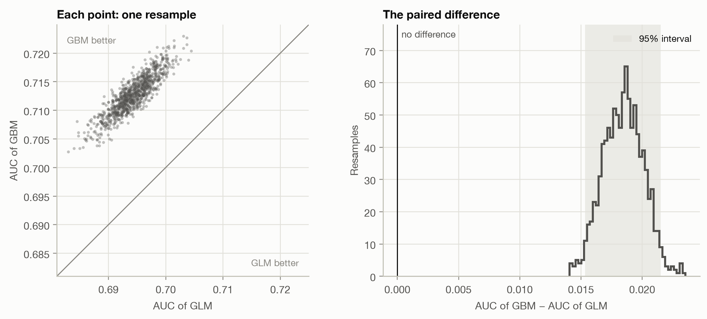
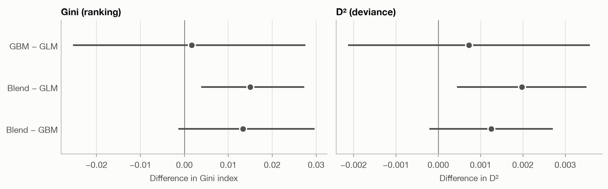

boot = paired_bootstrap(auc_rank, y, {m: b[m] for m in ("GLM", "GBM")}, n_boot=N_BOOT)Comparing models
Is one model really better, or did the test set favour it by chance? Paired bootstrap, DeLong’s test for AUC and the Diebold–Mariano test for losses.
Question answered: is one model really better than another, or did the test set happen to favour it?
Every metric on the earlier pages was computed on one test set of 169,504 policies. A different sample of policies would have given slightly different values, so each metric is an estimate with sampling uncertainty. When two models are close, the question is whether their gap is larger than that uncertainty. This page covers three ways to answer it:
- the paired bootstrap, which works for any metric;
- DeLong’s test, a fast formula for the difference between two AUCs;
- the Diebold–Mariano test, for any metric that is an average of per-observation losses (log loss, Brier score, deviance).
It ends by settling a question left open on the lift chart page: is the GLM–GBM blend’s improvement real?
Compare the difference, not two intervals
Both models are scored on the same policies. That matters: a test set that happens to contain many easy-to-rank policies flatters both models at once. Most of the sampling noise is shared, and it cancels in the difference.
The tempting shortcut, computing an interval for each model and checking whether they overlap, ignores this. It treats the two estimates as independent and overstates the uncertainty of the difference, often by a large factor. The right approach measures the uncertainty of the difference itself, on paired data. All three methods below do that.
The paired bootstrap
The bootstrap estimates sampling uncertainty by imitating the sampling:
- draw a resample of the test set: as many policies as it has, drawn at random with replacement (some appear twice, others not at all);
- score both models on the same resample and record their difference;
- repeat many times (here 1,000).
The spread of the recorded differences shows how much the difference would vary from one test set to another. Its 2.5% and 97.5% quantiles give a 95% percentile interval.
Here is the AUC of the two HasClaim models from the ROC page:
Code
fig, axes = plt.subplots(1, 2, figsize=(10, 4.4))
plot_paired_bootstrap(boot, "GBM", "GLM", axes)
fig.tight_layout()
The left panel shows why pairing matters. From one resample to the next, the AUCs move together (correlation 0.88): a resample that is easy for the GLM is easy for the GBM too. Each AUC on its own has a standard error of about 0.0033, but their difference only 0.0016. Treating the models as independent would give 0.0047, overstating the uncertainty 2.9 times.
Code
pd.DataFrame({
**{m: {"AUC": auc[m], "std. error": se[m], "lower": boot[m].quantile(0.025), "upper": boot[m].quantile(0.975)}
for m in ("GLM", "GBM")},
"GBM − GLM": boot_auc.rename({"difference": "AUC"}).drop("p-value"),
}).T.round(4)| AUC | std. error | lower | upper | |
|---|---|---|---|---|
| GLM | 0.6943 | 0.0033 | 0.6875 | 0.7003 |
| GBM | 0.7127 | 0.0033 | 0.7058 | 0.7191 |
| GBM − GLM | 0.0184 | 0.0016 | 0.0153 | 0.0215 |
The whole interval for GBM − GLM lies above 0: not one of the 1,000 resamples had the GLM ahead. The GBM ranks better, and not by chance.
NoteWhy the bootstrap works, and when it doesn’t
The bootstrap treats the test set as a stand-in for the population and resamples from it. It works for any metric you can compute, however complicated (AUC, Gini, a lift ratio, the precision in the top 5%), which makes it the default tool. It needs:
- Independent observations. Resampling single policies assumes each is a separate draw. With grouped data (several policies per customer) or time series, resample whole groups or blocks instead.
- Enough resamples. 1,000 is plenty for a 95% interval. Small p-values need more: with B resamples a p-value can’t go much below 2/B.
- Time. Every resample recomputes the metric for every model.
DeLong’s test for AUC
For AUC there is a formula that gives the same answer without resampling. DeLong, DeLong and Clarke-Pearson (1988) start from the reading of AUC on the ROC page: the share of (claim, no-claim) pairs that the model orders correctly. That share is an average over pairs, so it splits into a contribution per policy, its placement value:
- for a policy with a claim: the share of no-claim policies it outscores;
- for a policy without a claim: the share of claim policies that outscore it
(ties count ½). Both sets of placement values average to the AUC, and their variances give the variance of the AUC. For two models, the same computation on the per-policy differences of their placement values gives the variance of the AUC difference, with the pairing built in:
\[ \operatorname{Var}(\widehat{\text{AUC}}_A - \widehat{\text{AUC}}_B) = \frac{\operatorname{Var}(V^A_{1} - V^B_{1})}{n_1} + \frac{\operatorname{Var}(V^A_{0} - V^B_{0})}{n_0}, \]
where \(V_1\) are the placement values of the \(n_1\) claim policies and \(V_0\) those of the \(n_0\) no-claim policies. The test statistic is the difference divided by its standard error, compared with the normal distribution.
delong = delong_test(y, b["GBM"], b["GLM"])
comparison_table({"DeLong": delong, "Paired bootstrap": boot_auc})| difference | std. error | 95% interval | p-value | |
|---|---|---|---|---|
| DeLong | 0.01844 | 0.001649 | [0.01521, 0.02167] | < 0.001 |
| Paired bootstrap | 0.01844 | 0.001634 | [0.01533, 0.02152] | 0.002 |
The two methods agree closely: DeLong’s standard error is 0.00165, the bootstrap’s 0.00163. DeLong’s p-value can go far below anything 1,000 resamples could show, and it takes a fraction of a second. For AUC alone, DeLong is the standard choice. For other metrics, use the bootstrap.
The Diebold–Mariano test for losses
Log loss, the Brier score, squared error and deviance are all averages of a loss per observation. Comparing two models on such a metric is comparing two averages over the same observations. Diebold and Mariano (1995) test this through the loss differential of each observation,
\[ d_i = L(y_i, \hat y^A_i) - L(y_i, \hat y^B_i), \]
whose average is the difference in the metric. If the models are equally good, the \(d_i\) average to 0 apart from noise. The test divides \(\bar d\) by its standard error, \(\text{sd}(d) / \sqrt n\), and compares the result with the normal distribution. With weights (such as exposure) both the average and its standard error are weighted.
For independent observations this is simply a paired test on the losses. The name comes from forecasting, where the observations form a time series: there the standard error must allow for autocorrelation between consecutive \(d_i\) (a Newey–West standard error), which is the original test’s real contribution.
p_glm, p_gbm = b["GLM"].to_numpy(), b["GBM"].to_numpy()
log_loss_per_policy = lambda p: -(y * np.log(p) + (1 - y) * np.log(1 - p))
comparison_table({
"log loss": diebold_mariano(log_loss_per_policy(p_glm), log_loss_per_policy(p_gbm)),
"Brier score": diebold_mariano((p_glm - y) ** 2, (p_gbm - y) ** 2),
})| difference | std. error | 95% interval | p-value | |
|---|---|---|---|---|
| log loss | 0.003199 | 0.0002108 | [0.002786, 0.003612] | < 0.001 |
| Brier score | 0.0004868 | 4.17e-05 | [0.0004051, 0.0005686] | < 0.001 |
The GBM’s log loss is 2.2% lower than the GLM’s, a small relative gain but measured very precisely: on a large test set even small differences in an average loss are easy to detect. The probabilities agree with the ranking from the AUC tests. The GBM is better on both.
Two things the Diebold–Mariano test can’t do:
- AUC and Gini are not averages of per-observation losses. They depend on pairs or on the ranking of the whole test set, so they have no loss differential. Use DeLong or the bootstrap.
- It compares scores, not truth. A significant difference in log loss says one model’s probabilities are closer to the outcomes on average. It says nothing about where: for that, look at calibration plots and double lift charts.
Is the blend’s improvement real?
The lift chart page found that the GLM and the GBM for pure premium each detect mispricing in the other, and that their geometric mean beats both. But all three Gini indices lay within about 0.015 of each other, on a target where a few large claims dominate everything. Time to test.
One detail first. On the lift chart page, the blend was rescaled so that its average on the test set matched the actual average. That uses the test outcomes, which would flatter the blend’s deviance. Here the scale factor comes from the training set, so nothing about the blend is fitted on the test data. (The Gini doesn’t depend on the scale, so it is unchanged.)
pp = pure_premium_predictions()
yp, w = pp["y"].to_numpy(), pp["w"].to_numpy()
train, fitted = train_test().train, load_models()["pure_premium"]
glm_train, gbm_train = (fitted[m].predict(train[FEATURES]) for m in ("GLM", "GBM"))
scale = np.average(train["PurePremium"], weights=train["Exposure"]) / np.average(
np.sqrt(glm_train * gbm_train), weights=train["Exposure"]
)
scores = {m: pp[m].to_numpy() for m in ("GLM", "GBM")}
scores["Blend"] = scale * np.sqrt(scores["GLM"] * scores["GBM"])We compare all three pairs on two metrics:
- the Gini index, a ranking metric with no per-policy loss: paired bootstrap, resampling policies together with their exposure;
- D², the share of the Null model’s Tweedie deviance explained: the Diebold–Mariano test on the per-policy deviance, weighted by exposure. Since all models share the same Null deviance, a difference in D² is a difference in mean deviance divided by the Null deviance.
pairs = [("GBM", "GLM"), ("Blend", "GLM"), ("Blend", "GBM")]
gini = {m: gini_index(yp, s, w) for m, s in scores.items()}
gini_boot = paired_bootstrap(gini_index, yp, scores, w, n_boot=N_BOOT)
gini_tests = {f"{a} − {c}": bootstrap_summary(gini[a] - gini[c], gini_boot[a] - gini_boot[c]) for a, c in pairs}
deviance = {m: tweedie_deviance(yp, s, TWEEDIE_POWER) for m, s in scores.items()}
null_deviance = np.average(tweedie_deviance(yp, pp["Null"], TWEEDIE_POWER), weights=w)
d2_tests = {}
for a, c in pairs:
dm = diebold_mariano(deviance[c], deviance[a], w) # positive: model a has lower deviance
scaled = ["difference", "std. error", "lower", "upper"]
d2_tests[f"{a} − {c}"] = pd.concat([dm[scaled] / null_deviance, dm[["p-value"]]])Code
fig, axes = plt.subplots(1, 2, figsize=(10, 3.2), sharey=True)
plot_intervals(pd.DataFrame(gini_tests).T, ax=axes[0], xlabel="Difference in Gini index", title="Gini (ranking)")
plot_intervals(pd.DataFrame(d2_tests).T, ax=axes[1], xlabel="Difference in D²", title="D² (deviance)")
fig.tight_layout()
Code
pd.concat({"Gini (bootstrap)": comparison_table(gini_tests, ".3f"),
"D² (Diebold–Mariano)": comparison_table(d2_tests, ".4f")}, axis=1)| Gini (bootstrap) | D² (Diebold–Mariano) | |||||||
|---|---|---|---|---|---|---|---|---|
| difference | std. error | 95% interval | p-value | difference | std. error | 95% interval | p-value | |
| GBM − GLM | 0.002 | 0.014 | [-0.025, 0.028] | 0.913 | 0.0007 | 0.0015 | [-0.0021, 0.0036] | 0.619 |
| Blend − GLM | 0.015 | 0.006 | [0.004, 0.027] | 0.018 | 0.0020 | 0.0008 | [0.0004, 0.0035] | 0.012 |
| Blend − GBM | 0.013 | 0.008 | [-0.001, 0.030] | 0.084 | 0.0012 | 0.0007 | [-0.0002, 0.0027] | 0.093 |
Three conclusions, from clear to uncertain:
- GBM against GLM: no detectable difference. The Gini difference is +0.002 with an interval from -0.025 to 0.028, and the D² difference is just as inconclusive (p = 0.619). The GBM’s clearly better AUC for
HasClaimdoes not carry over to pure premium, where claim sizes add a large amount of noise. - Blend against GLM: likely better. Both intervals exclude 0 (p = 0.018 for the Gini, 0.012 for D²). That is good evidence, though not overwhelming (see the next section).
- Blend against GBM: suggestive, not established. Both intervals include 0: the Gini gain of 0.013 has p = 0.084, the D² gain p = 0.093.
The pairing is again what makes any of this detectable. Each Gini on its own has a bootstrap standard error of about 0.028, so the per-model intervals overlap almost completely, yet the blend’s difference from the GLM has a standard error of only 0.006. The blend is built from the GLM and the GBM, so its ranking is close to both, and most of the noise cancels.
Why are the intervals so wide? The test set has only 6,236 policies with a claim, and claim costs range over several orders of magnitude. For the deviance comparison of blend and GBM, the 170 policies that contribute most (the top 0.1%) account for 96% of the variance of the loss differential. A handful of large claims decide the result, so the test is far less precise than the size of the test set suggests.
Before declaring a winner
Six tests, not one. This section ran three comparisons on two metrics. With six chances, one p-value below 0.05 is less convincing than it looks. The simplest correction (Bonferroni) asks for p below 0.05 / 6 ≈ 0.008 for each test, and neither blend result passes it. The blend’s gain over the GLM is still the most credible finding: both metrics point the same way, and the double lift chart explained why blending should help before we tested it. But it should be confirmed on fresh data before anyone relies on it.
The blend was suggested by the test set. We tried it because the double lift chart, drawn on these same test policies, pointed to it. A 50/50 blend has no tuned parameter and its scale comes from the training data, so the risk of having fitted the test set is small. Had we tuned the blend’s weight on the test set, its test-set score would be optimistic and the tests above invalid. The clean procedure: choose the blend on a validation set, or on cross-validation folds of the training data, and test once on held-out data.
Statistical is not practical significance. A p-value says whether a difference is distinguishable from noise, not whether it matters. The GBM’s 2.2% lower log loss is overwhelmingly significant but may not justify replacing a GLM that regulators and underwriters understand. Report the interval for the difference, and judge whether its whole range would change a decision.
NoteWhat these tests leave out: the training sample
All three methods resample the test set. They answer: ‘are these two fitted models different on the population the test set comes from?’ That is the right question when deciding which fitted model to deploy. They ignore that training on a different sample would have produced different models. To ask whether one modelling approach beats another (GBMs against GLMs in general, on this kind of data), repeat the fitting across cross-validation folds or repeated splits, and use a test that accounts for the overlap between training sets, such as the corrected resampled t-test of Nadeau and Bengio (2003).
Which test for which metric
| Metric | Average of a loss per observation? | Test |
|---|---|---|
| AUC | no (depends on pairs) | DeLong; or paired bootstrap |
| Gini index, lift ratio, top-k precision | no (depends on the ranking) | paired bootstrap |
| Log loss, Brier score, deviance, MSE, MAE | yes | Diebold–Mariano (paired test on the loss differential); or paired bootstrap |
| D², R² (against the same Null model) | ratio of averages | Diebold–Mariano on the deviance or squared error |
| Any metric, observations over time | — | Diebold–Mariano with a Newey–West standard error; block bootstrap |
| Any metric, grouped observations | — | bootstrap that resamples whole groups |
Takeaways
- A metric computed on a test set is an estimate. Before preferring one model, check whether the gap is larger than its sampling uncertainty.
- Pair the comparison. Both models are scored on the same observations, so test the difference directly. Overlapping per-model intervals say little: here the paired standard error was 2.9 times smaller than the unpaired one for AUC.
- The paired bootstrap works for any metric. DeLong’s test gives the same answer for AUC instantly. The Diebold–Mariano test handles any average loss, such as log loss or deviance.
- For
HasClaim, the GBM beats the GLM beyond doubt. For pure premium, GBM and GLM are indistinguishable. The blend is likely better than the GLM (p = 0.018 and 0.012, not robust to a correction for multiple tests), and its edge over the GBM is suggestive but not established on this test set. - Watch for multiple comparisons, for choices made on the test set, and for the difference between statistical and practical significance.